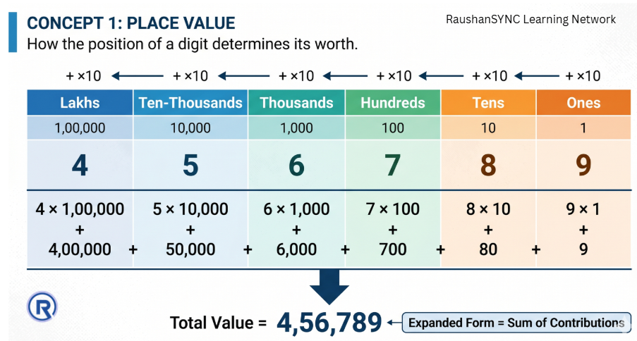
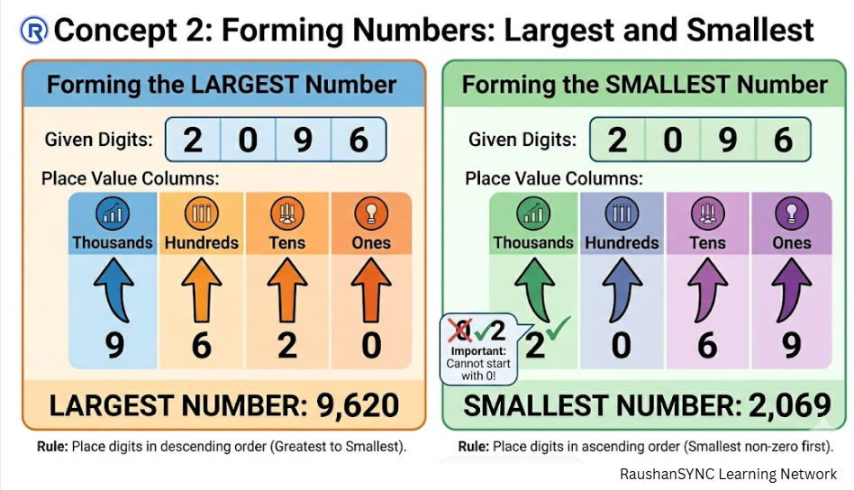
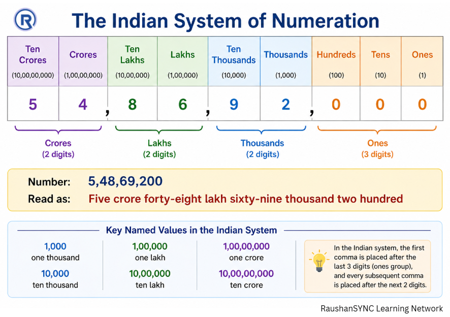
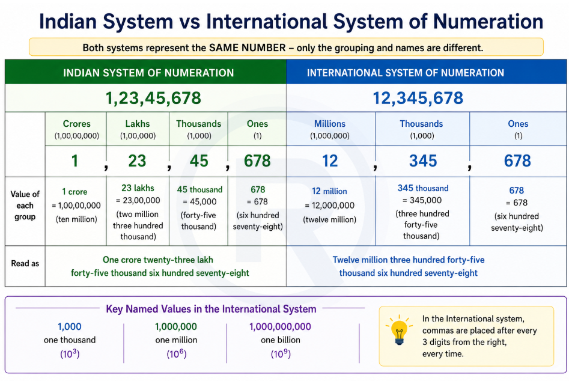

Part 2: Large Numbers, Place Value, and Numeration Systems
Class 6 · Chapter 1 · Patterns in Mathematics
1. Big Picture Overview
In everyday life, we encounter numbers of many sizes — the number of students in a class, the population of a city, the distance between planets. As numbers grow larger, reading and writing them correctly becomes a real challenge. A single misread digit can change a number by millions.
This section develops two skills. First, a conceptual skill: understanding what each digit in a large number actually contributes — this is place value. Second, a practical skill: knowing two different but equally valid ways of grouping digits to read large numbers aloud — the Indian system and the International system.
These are not arbitrary naming conventions. They reflect how different civilisations developed their understanding of numbers, and both are in active use today.
2. Core Concepts
Concept 1 — Place Value: What Every Digit Is Actually Worth
a. Intuitive Explanation
Suppose you write the digit 3 three times: 3, 30, 300. These are very different quantities — yet the digit itself is the same. What changed? The position of the digit.
This is the heart of our number system. A digit's value is not fixed. It is determined by where it sits within the number.
b. Formal Idea
In our decimal number system, each position in a number has a place value — a fixed multiplier that tells you what one unit at that position is worth.
Moving from right to left, the place values are: Ones (1), Tens (10), Hundreds (100), Thousands (1,000), Ten-Thousands (10,000), Lakhs (1,00,000), and so on — each position being ten times the value of the position to its right.
The actual value contributed by any digit is: digit × place value of that position.
The total value of the number is the sum of contributions from all its digits.
c. Deep Explanation
Why does each position multiply by 10?
Because we use a base-10 system. This means we count in groups of ten. Once you have ten units, you carry one to the next position. Once you have ten tens, you carry one to the hundreds position. This "grouping by ten" is consistent throughout — and that is what makes each position worth exactly ten times the position to its right.
Expanded form makes this visible. When you write a number like 96,340 as:
9 × 10,000 + 6 × 1,000 + 3 × 100 + 4 × 10 + 0 × 1
— you are showing exactly what each digit contributes. This is not just notation; it is a demonstration of how the number is actually constructed.
Zero as a placeholder: A digit zero does not contribute value, but it holds a position open. Without it, the positions of other digits would shift, changing the entire number. The zero in 502 is not "nothing" — it is actively holding the tens position so that 5 stays in the hundreds position.

d. Common Misconceptions
Misconception: "The digit with the highest face value is the most important digit in a number."
Why it feels correct: We naturally focus on large-looking digits.
Why it is incorrect: The digit in the highest position — even if it is a 1 — contributes far more to the number's value than a 9 sitting in a lower position. In 10,009, the 1 contributes 10,000 and the 9 contributes only 9.
Correct way to think: The position of a digit determines its power, not its face value.
Misconception: "The expanded form of a number is just a different way of writing it — it doesn't tell me anything new."
Why it feels correct: The expanded form represents the same number, so it seems redundant.
Why it is incorrect: Expanded form reveals the internal structure of a number — it makes place value explicit and visible. It teaches you exactly what you are adding together when you write a number in its compact form.
e. Conceptual Connections
Place value is the reason the comparison method from Part 1 works. When you compare leftmost digits first, you are implicitly comparing the highest place values first — because those positions carry the most weight in the number's total value.
Concept 2 — Forming Numbers: Largest and Smallest
a. Intuitive Explanation
Given a fixed set of digits, how do you arrange them to make the largest possible number? Or the smallest? This is not guessing — it follows directly from understanding place value.
b. Formal Idea
To form the largest number from a set of digits: place the greatest digit in the highest position, the next greatest in the next position, and so on — arranging digits in descending order from left to right.
To form the smallest number from a set of digits: place the smallest non-zero digit in the highest position, then arrange remaining digits in ascending order — keeping zeros toward the right.
c. Deep Explanation
The rule for largest numbers is straightforward: since higher positions carry more weight, you want the most powerful digits in the most powerful positions.
The smallest number is slightly more subtle. The digit `0` cannot occupy the leading (leftmost) position — because that would reduce the digit count, making it a smaller kind of number altogether (fewer digits). So the smallest non-zero digit goes to the highest position, and zeros are used to fill lower positions where they reduce the number's value without disappearing it.
When digits repeat: The same logic applies. Place repeated large digits at the top positions for the largest number; place repeated small digits at the bottom positions for the smallest.
d. Common Misconceptions
Misconception: "To form the smallest number, just put all digits in ascending order, including starting with zero."
Why it is incorrect: Leading zeros are not allowed in standard number writing. 0345 is not a valid 4-digit number — it is simply 345, a 3-digit number. The digit `0` can only appear in positions after the first.
e. Visual Support

Concept 3 — The Indian System of Numeration
a. Intuitive Explanation
When you write and read large numbers in India, you group the digits in a specific way. The first group (from the right) has 3 digits, and then each subsequent group has 2 digits. This grouping tells you what to call each section of the number.
b. Formal Idea
In the Indian system, starting from the rightmost digit:
- The first 3 digits form the ones group (ones, tens, hundreds)
- The next 2 digits form the thousands group
- The next 2 digits form the lakhs group
- The next 2 digits form the crores group
The commas in a number written in the Indian system are placed after every 3 digits from the right for the first comma, then after every 2 digits subsequently.
Key named values: 1,000 = one thousand; 10,000 = ten thousand; 1,00,000 = one lakh; 10,00,000 = ten lakh; 1,00,00,000 = one crore; 10,00,00,000 = ten crore.
c. Deep Explanation
Why do we name large numbers at all? Because the human mind struggles to grasp raw strings of digits. Saying "54,86,920" as "fifty-four lakh eighty-six thousand nine hundred and twenty" breaks the number into manageable chunks — each chunk named and quantified.
The Indian system uses lakh and crore as its anchor names for large quantities. These names are not arbitrary — they reflect historical conventions of trade, land measurement, and taxation in South Asian civilisations, where these were the natural units of large-scale counting.

d. Common Misconceptions
Misconception: "Lakh and crore are informal or regional terms, not proper mathematical terms."
Why it is incorrect: These are fully defined mathematical values — 1 lakh = 1,00,000 and 1 crore = 1,00,00,000 — and they are the standard terms used in the Indian system of numeration, which is an officially recognised system.
Concept 4 — The International System of Numeration
a. Intuitive Explanation
In many parts of the world, digits in large numbers are grouped differently — always in sets of three from the right, and the key names used are thousand, million, and billion.
b. Formal Idea
In the International system, commas are placed after every 3 digits from the right, consistently:
- 1,000 = one thousand
- 1,000,000 = one million
- 1,000,000,000 = one billion
Each new name represents 1,000 times the previous one (thousand × 1000 = million; million × 1000 = billion).
c. Deep Explanation
The elegance of the International system is its complete regularity — every group is always 3 digits, and each named group is exactly 1,000 times the previous. This makes the system highly systematic.
Comparing the two systems: The same number is written and read differently in each system. For example, a number with 7 digits:
- Indian system: 1,23,45,678 → "one crore twenty-three lakh forty-five thousand six hundred seventy-eight"
- International system: 12,345,678 → "twelve million three hundred forty-five thousand six hundred seventy-eight"
Both are correct descriptions of the same quantity — they simply use different grouping and naming conventions.

d. Common Misconceptions
Misconception: "Million is a vague term for 'very large' — it doesn't have a precise value."
Why it is incorrect: One million is exactly 10,00,000 (ten lakh in the Indian system). It is a precise, defined quantity.
Misconception: "The International system is more correct than the Indian system."
Why it is incorrect: Both systems are mathematically equivalent. They name the same quantities using different conventions. Neither is more correct — they serve different regional and practical contexts.
e. Conceptual Connections
Both numeration systems are built on the same foundation: place value. The difference between them lies only in where they place commas and what names they give to groups. The underlying mathematics — the value of each digit based on its position — is identical in both.
3. Important Distinctions
| Feature | Indian System | International System |
|---|---|---|
| Grouping | 3 digits, then groups of 2 | Always groups of 3 |
| After 1,000 | Ten thousand, Lakh, Ten lakh, Crore | Million, Billion |
| Comma placement | After 3rd digit from right, then every 2 | Every 3 digits from right |
| Primary use | India and South Asia | Most of the world |
4. Concept Checkpoints
These are thinking questions. Work through them slowly — do not rush to an answer.
- The digit 5 appears in both the tens place and the lakhs place of a number. How many times more does the 5 in the lakhs place contribute compared to the 5 in the tens place? What does this tell you about place value?
- Can two different numbers have the same set of digits? What does this tell you about the relationship between digits and numbers?
- Why does writing a number in expanded form help you understand it better than just reading it as a string of digits?
- Take any 6-digit number. Write it in both the Indian and International system with commas. Are the commas in the same positions? Why or why not?
5. Chapter-Level Mental Model (for this section)
Every large number is really a sum of pieces, where each piece is a digit multiplied by the power of ten assigned to its position. Place value is the machinery that makes this work.
The Indian and International numeration systems are two different languages for reading the same underlying mathematical reality. Learning both is not about confusion — it is about recognising that mathematics is a universal discipline expressed through multiple cultural conventions.
The skill being developed here is the ability to move fluidly between a number's compact written form and its full meaning — to see "6,42,891" not as a string of symbols, but as a structured sum of quantities.
Continue to Part 3:
▶ Estimation, Brackets, and Roman Numerals